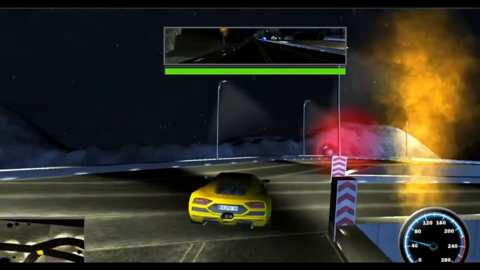

Project Case Study
Velocity Rush
A university-developed online multiplayer game where players compete across four levels, collect power-ups and avoid traps while trying to reach the checkpoint.
Gameplay
Players navigate hazards and power-ups while trying to survive to the checkpoint. Reaching the checkpoint is the win condition; being eliminated by dying means a loss.

My contribution
I was the main developer and built the core game experience, including the four levels, gameplay mechanics and power-up and trap interactions. I implemented the online multiplayer connection using Photon PUN.